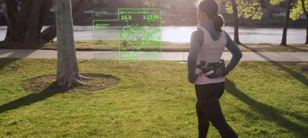

Innovacion y funcionamiento
Innovacion
Una vez nuestro componente esta doblado de esta manera cónica, la insertamos en una lente especial que ha pasado filtros médicos, y nos permite adaptar nuestro dispositivo entero a su forma. Luego cortamos la parte de dentro de la lente, la parte que iría pegada al ojo para que se adapte mejor a la forma de tu ojo y de esta manera que el display este bien orientado. Podemos describirlo como un foco, un foco que sigue el movimiento de tus ojos. Por estos mismos motivos creemos que es el primer dispositivo que verdaderamente puede hacer eye-user-control, ya que usas los ojos para controlarlo y no las manos por ejemplo para controlarlo por gestos o por voz.
Aqui os dejamos un video de nuestro prototipo
Mojo Lense
Nuestro producto se trata de una lentilla inteligente, que tiene funcionalidades de AR Display (Dispositivo de realidad aumentada). Creemos que es la primera lentilla inteligente que existe. En este podcast uno de nuestro desarrolladores y lideres del proyecto cuenta mas en detalle sobre sus funcionalidades
Contacto
Ayudanos a crecer

Saratoga, California
+34 945565465